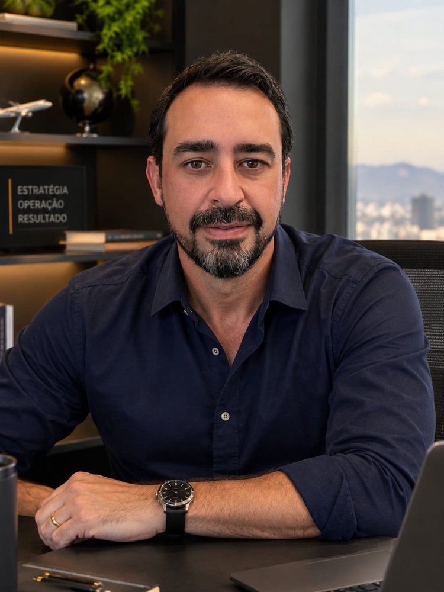

Luiz Amo · Capacity CaseDo despacho de tripulantes em Congonhas ao dimensionamento de 4.900 tripulantes, em 8 cadeiras. Depois, carga perigosa e operações médicas. Hoje, com IA, monto a sua torre em semanas, em cima dos sistemas que você já tem.
O dono junta tudo na mão, tarde demais para decidir.
Indicadores ilustrativos.
Como eu trabalho
Hoje a inteligência artificial faz o trabalho técnico pesado. O que faz diferença é saber o que pedir e para quê.
Mapeio como a operação roda por trás, decido o que vem primeiro e traduzo o negócio em números que fazem sentido.
Lê documentos sem redigitação, junta os sistemas, monta as telas e avisa quando algo sai do rumo.
Toda empresa tem aquela pessoa que resolve as planilhas. Eu treino essa pessoa para cuidar da torre. Você não fica refém de ninguém, nem de mim.
Quem faz
19 anos respondendo a mesma pergunta: quantas pessoas, em qual escala e a que custo a operação precisa para crescer com margem.
“A implementação sólida da Torre de Controle Logístico […] proporcionaram ganhos tangíveis, como a redução significativa do custo operacional (pedágio e combustível, na casa de 10 a 12% a.a).”
Como começa
Você me conta quais sistemas usa e quais decisões quer tomar com mais segurança.
Defino o que a torre lê, junta e cria, e quais números vão aparecer na tela.
O time passa a usar todo dia. Eu acompanho e ensino IA no caminho.
A pessoa que eu treinei passa a cuidar da torre. Eu sigo por perto para evoluir o que precisar.
Quem já trabalhou comigo
“Em poucos dias o sistema estava rodando. Um fenômeno.”
“Fenomenal. Fiquei impressionado com a rapidez.”
“Como gerente de torre de controle, o Luiz demonstrou uma excepcional capacidade de coordenação e gestão eficiente das operações.”
“Trabalhamos juntos na construção dos novos KPI's [da empresa]. […] Expertise na construção e análise de indicadores, sempre focado em reduções, otimizações e ganhos.”
Produtos que nasceram do método
Cada produto tem a própria página, feita para quem é do setor.
O CRM da corretora de seguros: a carteira em linha do tempo e a reunião que se confirma sozinha pelo WhatsApp.
Para corretoras de seguro de vida e patrimônio.
Conhecer o CRM AliançaLaboratório · ideias em teste
Quando olho um setor por dentro, às vezes enxergo um problema que nenhuma empresa sozinha resolve. Estas ideias nasceram assim. Ainda estão em teste e podem mudar, mas mostram como eu penso.
O que vi: quem gera sucata não sabe quem compra perto, e quem compra não acha material com regularidade.
A ideia: um classificado onde quem tem material anuncia de graça e os compradores da região mandam oferta.
O que vi: o médico aceita ou recusa plantão sem saber quanto sobra depois de pagar o deslocamento.
A ideia: quem precisa de médico publica o plantão, e o médico vê o valor líquido antes de aceitar.
O que vi: o pernoite de tripulação ainda é montado em planilha e e-mail, e o hotel demora para receber.
A ideia: a escala da companhia vira reserva no hotel automaticamente, com o hotel recebendo antes.
Perguntas frequentes
Não. A torre lê o que já funciona e junta o que está espalhado. Eu só crio o que falta.
A sua empresa. Os dados e o sistema ficam nas contas da empresa. Você não fica refém de ninguém.
A torre continua. Desde o começo eu treino alguém do seu time para cuidar dela no dia a dia.
Não. Você precisa saber quais decisões quer tomar. A parte técnica é comigo e com a IA.
A torre faz mais sentido a partir de R$ 500 mil de faturamento por mês, quando o dono já não acompanha tudo de cabeça e a informação está espalhada em vários sistemas e planilhas. Se a sua empresa está chegando lá, vale conversar também.
Cada empresa tem um valor, porque depende do tamanho da operação e do que a torre precisa ler, juntar e criar. Na conversa de 30 minutos eu entendo o seu caso e já digo uma faixa para ele.
Me conta. Em 30 minutos eu digo se uma torre faz sentido para você.